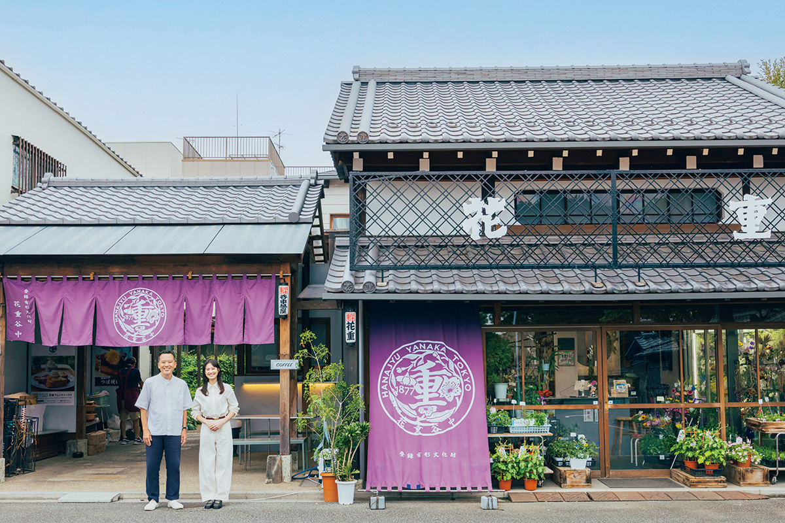
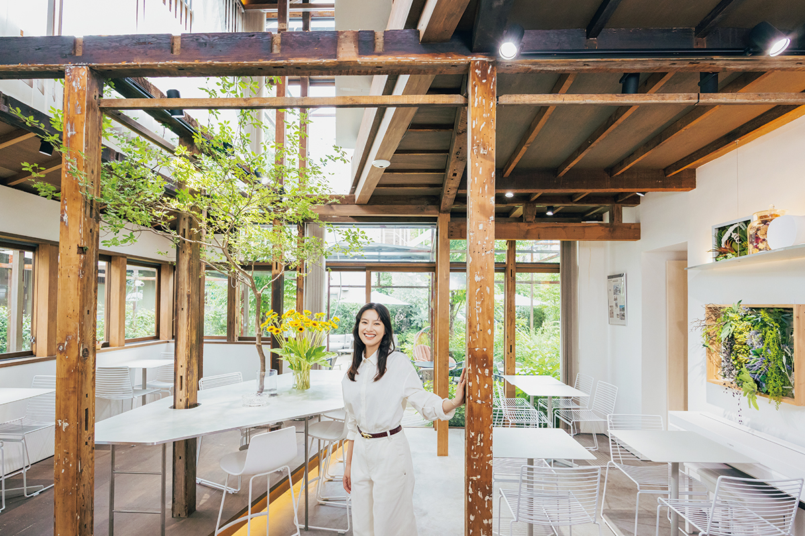
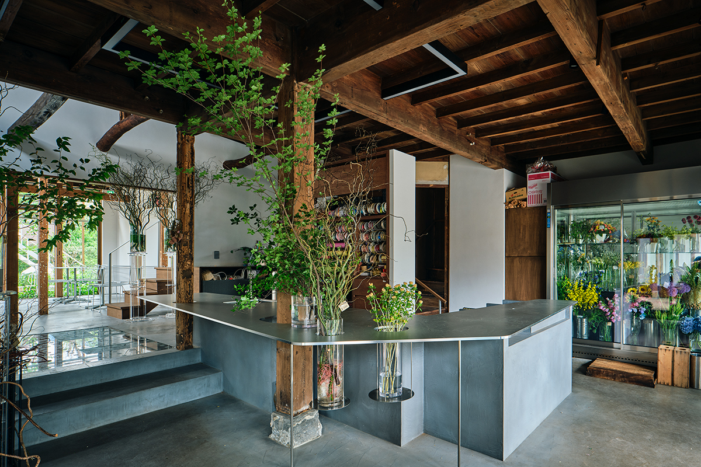
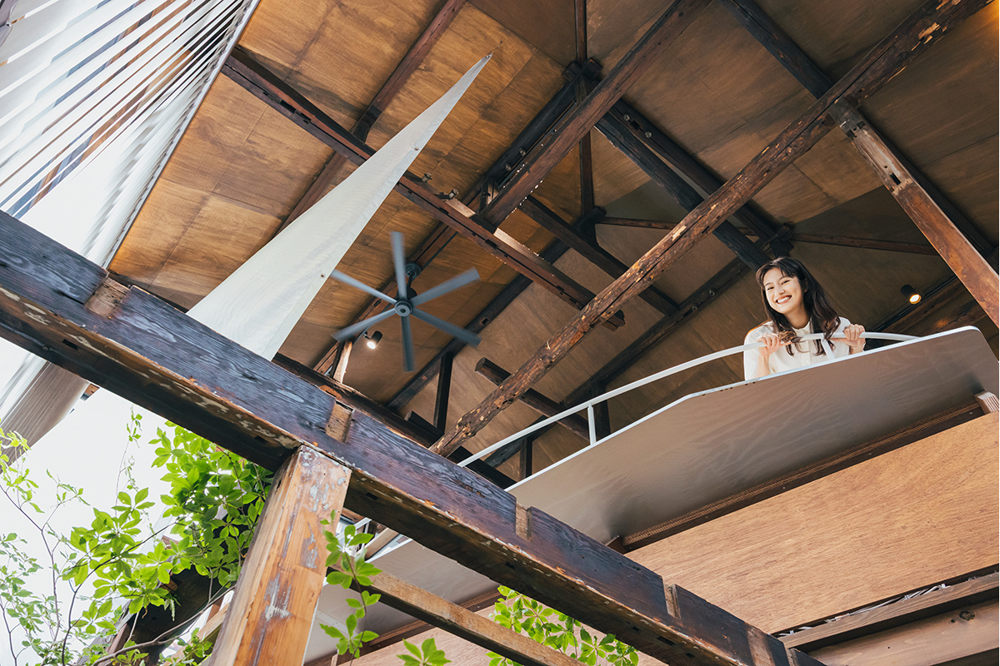
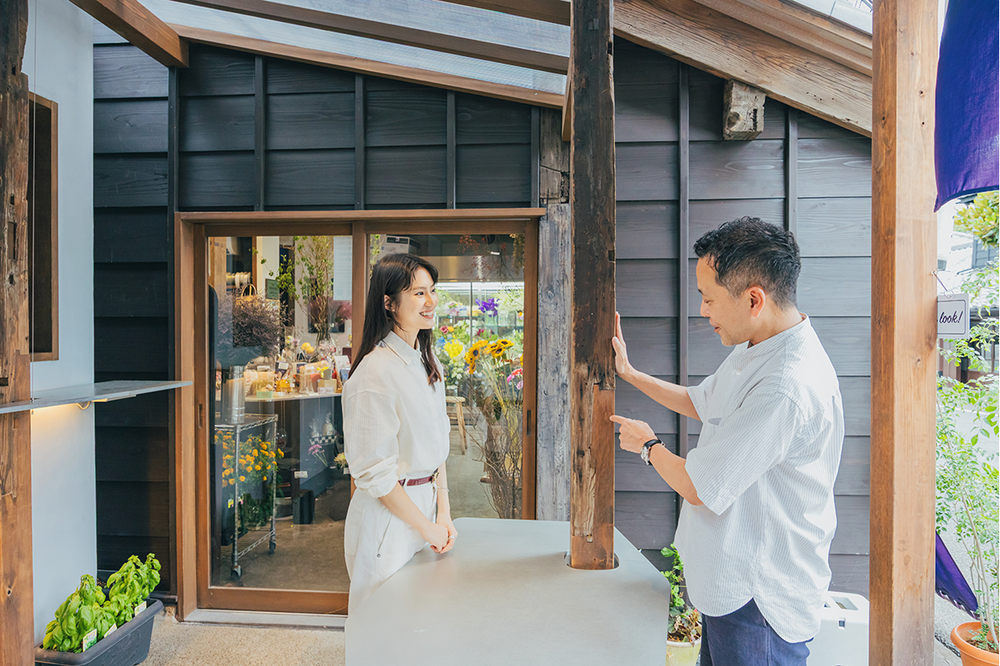
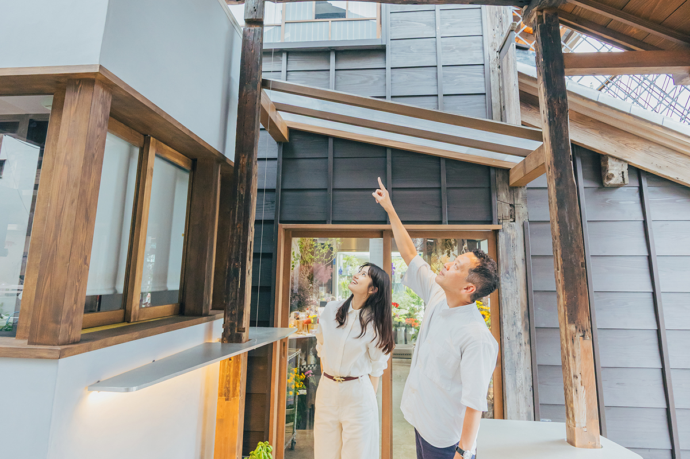
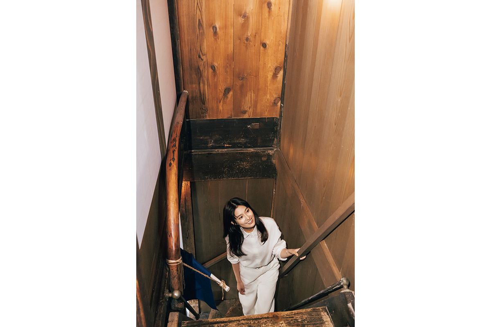
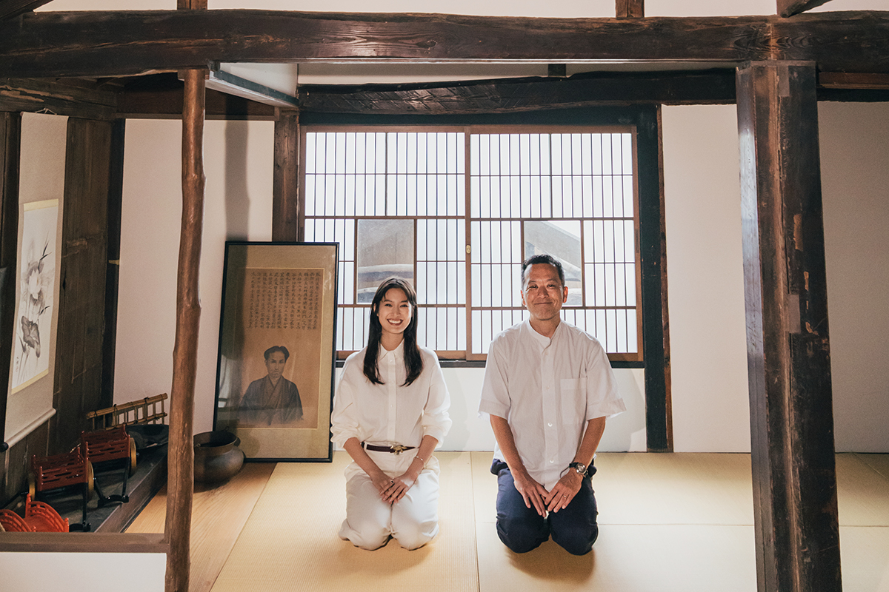

Токио · Янака · архитектура
Hanaju в Янаке: цветочная лавка 1870 года и кафе в старых деревянных домах

В Янаке, старом квартале Токио с деревянными домами, работает цветочная лавка Hanaju, основанная в 1870 году. Чтобы сохранить её здания и семейное дело, при лавке открыли кафе, куда может зайти любой. Историк архитектуры и актриса прошлись по обновлённому дому и рассказали, что в нём стоит разглядеть.
История
Как спасали старую лавку
Внутри Hanaju тепло от старого дерева, и всё же пространство выглядит современно. Актриса, которая пришла сюда вместе с историком архитектуры, первым делом спросила, как дом стал таким.
Цветочную лавку открыли в 1870 году. Её главное здание, фасад которого выходит на улицу, построено в 1877 году и внесено в список зарегистрированных объектов культурного наследия страны. Хозяин лавки в третьем поколении много сделал для того, чтобы цветочное дело в Японии стало современным: например, основал школу флористов. Ему очень хотелось, чтобы исторические постройки не исчезли.

Это желание поддержала местная компания: она помогла хозяйке лавки в четвёртом поколении и попросила общественную организацию, которая изучает историческую застройку района Тайто, обследовать все восемь зданий участка. Выяснилось, что дом за лавкой построили в годы от Тайсё до начала Сёва, то есть в 1910–1930-х годах, а соседняя мастерская оказалась нагая, длинным городским домом эпохи Эдо. Участок складывался десятилетиями, и каждое поколение что-то пристраивало и перестраивало.
Из восьми зданий оставили четыре. Чтобы на что-то содержать дома и саму лавку, решили открыть кафе, где могли бы отдохнуть и соседи, и туристы.
«Здесь не стали просто возвращать прежний облик. Обновили и само дело, и здание. Для исторического деревянного дома это редкий пример»
историк архитектуры

Дерево
Почему старый дом так трудно обновить
После войны в Японии старались избавляться от дерева, потому что оно горит, и в городах ремонт деревянных домов до сих пор связан со строгими ограничениями. По словам историка архитектуры, в 2025 году правила постепенно смягчались. Реставрация, при которой старую древесину чинят и используют дальше, выглядит скромно, но бережёт природу, и, по его мнению, такой подход стоит распространять.
У зарегистрированного объекта культурного наследия нельзя сильно менять внешний вид, но внутри перестраивать можно. Так и сделали в Hanaju: фасад восстановили, а интерьер решили в смелом современном духе. Проект делало бюро MARU architecture, у которого мастерская здесь же, в районе Тайто, а над домом работали архитекторы и дизайнеры первого ряда. По мнению историка архитектуры, это тоже редкость.
Терраса
Мягкая граница между домом и улицей
Из-за столика в кафе видно, что переход от комнаты к улице плавный, без резкой границы. Историк архитектуры считает, что это и есть замысел архитекторов, их прочтение японского дома.
«Западный дом сложен из камня или кирпича, и граница между внутри и снаружи у него чёткая. У японского деревянного дома есть свесы крыши и веранда, и он постепенно переходит в улицу. Выступающая терраса здесь новая по форме, но работает как свес крыши, и ощущение от неё такое же, как в старом японском доме»
историк архитектуры

Каркас террасы напоминает стволы деревьев. Он сделан из цельного железа, которое со временем естественно ржавеет. Тонкие стальные балки сечением 6 на 6 см заказывали на металлическом заводе, и соединены они так же точно, как врубки в старом деревянном доме. Железо рядом с деревом выбрано нарочно: оно не спорит со старой древесиной, а подчёркивает её возраст.

Историк архитектуры советует посмотреть на основания столбов. Столб гниёт снизу, от сырости, поэтому испорченную часть отпиливают и подставляют новую древесину. В Японии издавна чинят вещи и продолжают ими пользоваться: склеивают разбитую посуду золотым лаком, ставят заплаты на кимоно. Дерево недолговечно, поэтому его стараются сохранить надолго, и места починки тоже по-своему красивы.
Плотники
Следы мастеров, которых никто не знает по имени

Когда-то в кафе были потолок, верхние брусья дверных проёмов, резные фризы и раздвижные перегородки. Их убрали, и стали видны даже гнёзда для шипов в столбах. Следы того, как дом служил людям много лет, оставили открытыми, и это красиво. На столбах можно разглядеть следы плотницкого тесла и метки, которыми плотники отмечали место каждого столба: видно, как дом собирали.
«Такие дома строили не храмовые плотники, но в них видна добросовестная работа мастеров, чьих имён никто не знает. Многое открывается только при реставрации. Например, как ловко они использовали кривую балку. Нынешние архитекторы и строители восхищаются такими находками, и кажется, что ведёшь с теми мастерами разговор: а как бы сделал я?»
историк архитектуры


Актриса призналась, что раньше смотрела на старые дома просто как на красивые, а когда узнала их приёмы и истории, чувствует себя как в кино. Реставрация для неё это эстафета, которую передают через время. По словам историка архитектуры, так получается именно с деревом, на котором остаются следы рук. Если присматриваться к тому, что обычно не видно, начинаешь представлять, на чём держатся и другие здания.
Hanaju, цветочная лавка
- Адрес
- Токио, Тайто, Янака, 7-5-27
- Телефон
- +81 3-5834-8729
- Часы работы
- 9:00–16:30
- Выходные
- вторник, четвёртая среда месяца
- Сайт
- hanaju.co.jp
Кафе Hanaju Yanaka Chaya
- Адрес
- Токио, Тайто, Янака, 7-5-27
- Телефон
- +81 80-4348-7912
- Часы работы
- 10:00–17:00 (иногда по вечерам работает бар)
- Выходные
- вторник, четвёртая среда месяца
Фото: Майко Фукуи, Такуя Сэки.